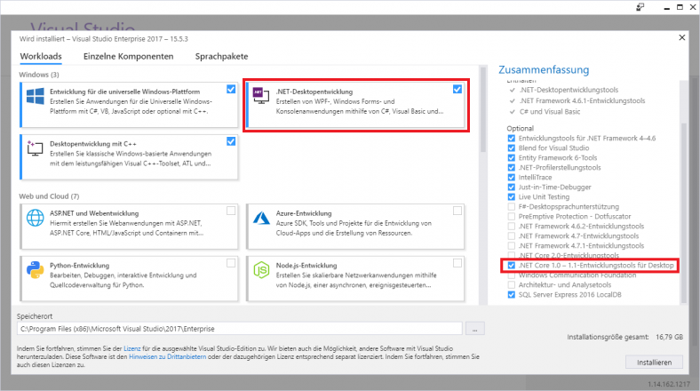
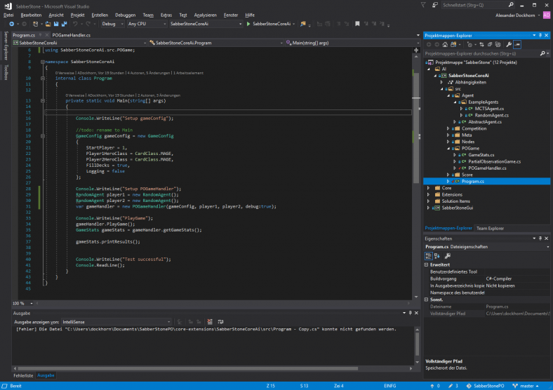

Setup Instructions
It is highly recommended to use Windows as developing platform. The Sabberstone-framework is based on the .Net framework. Compatibility problems can arise on other platforms. Feel free to contact us via our Q&A Forum or directly sent a mail to the our competition admin in case you run into any problems during the install process.
Step 1: Download the engine from Github
Clone the Github-Repository
Step 2: Install Visual Studio 2017 Community Edition or another IDE
You can download the web-installer from Visual Studio 2017 Community (Windows), Visual Studio Code (Windows, Mac, Linux) or a comparable IDE (e.g. MonoDevelop)
When installing Visual Studio please make sure to also install .Net Core 1.1. In case you already installed Visual Studio you can configure this in Nuget Manager.

Step 3: Open the project file from the clones Git Repository
You can find the file „SabberStone.sln“ in the root folder of the cloned repository.

Subproject SabberStoneCoreAi contains all classes you will need to implement your own agent. The Program.cs file shows a minimal example of calling the competition AI. Our example consists of two random agents that play a full game against each other.
Step 4: Start implementing your agent
See the Tutorial for a detailed explanation on how to write your first bot.
More helpful information can be found on the Ressource section.